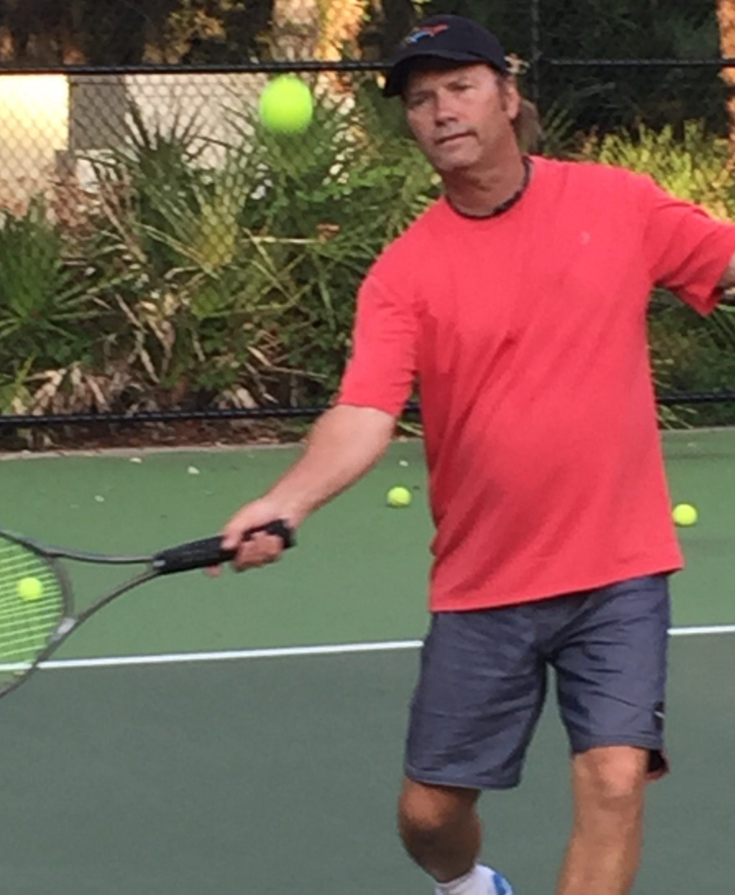

PTR-certified tennis professional with over 35 years of experience coaching juniors, adults, families, and developing athletes in Clermont, FL and throughout Central Florida.

Tommy is a PTR-certified tennis professional with over 35 years of experience and the founder of Serving Aces Tennis Academy. He began his coaching career in 1985 when former NFL quarterback Ron Jaworski hired him as a Staff Pro at his tennis club in Philadelphia.
Just two years later, Tommy advanced to Youth Tennis Director and soon after became Club Director — all while continuing to teach full-time. His rapid progression reflects both his coaching ability and his deep commitment to player development.
After relocating to Florida, Tommy established Serving Aces to continue providing high-quality, personalized tennis instruction to players of all ages and skill levels throughout Central Florida.
As a player, Tommy competed primarily in doubles along with some singles at the college level, where he was named Rookie of the Year as a freshman. Following college, he continued competing in local and regional USTA-sanctioned tournaments, gaining valuable match experience that now informs his coaching approach.
He achieved a personal best 5.5 USTA rating and maintained a Top 100 Middle States ranking for three consecutive years, including a peak ranking of #50.
Tommy's philosophy has always been to treat students as individuals. While many coaches rely on a one-size-fits-all approach, Tommy tailors every lesson based on the player's abilities, goals, and learning style.
With over three decades of experience, Tommy has seen the evolution of tennis technique and uses that knowledge to determine what works best for each individual player. Some methods are old school, many are new — but the goal is always the same: keep the learning process simple, effective, and fun.
If you're looking for a tennis coach in Clermont FL who focuses on clear instruction, confidence, and long-term improvement, Coach Tommy provides a positive and effective coaching experience for players of every background.
Book a Lesson with Tommy →